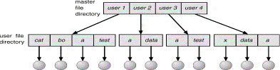
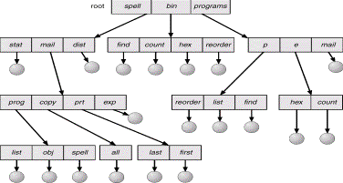
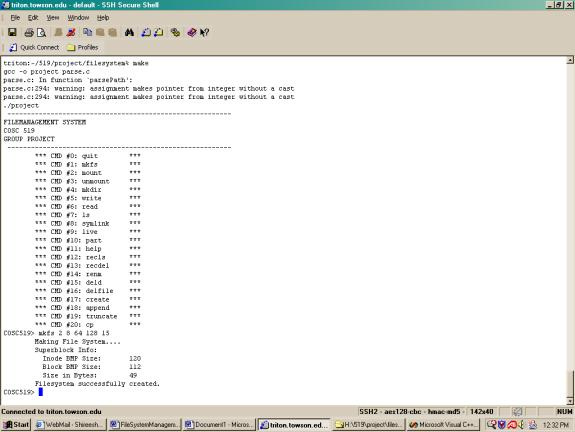
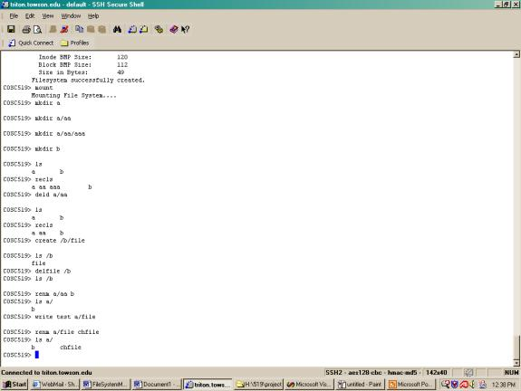
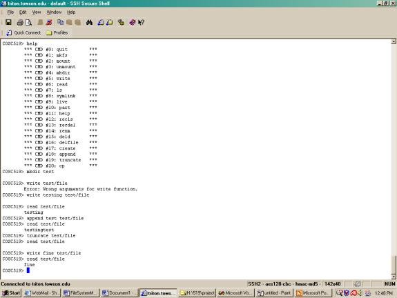
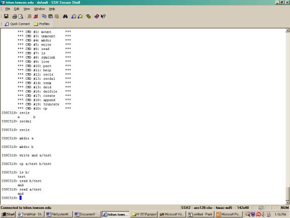

PART – 1
FILE SYSTEM DESCRIPTION
1. BACKGROUND
2. DEFINITION
3. ATTRIBUTES
4. FILE OPERATIONS
5. FILE ACCESS
6. PROTECTION
7. DIRECTORY STRUCTURE
a. SINGLE – LEVEL DIRECTORY
b. TWO – LEVEL DIRECTORY
c. TREE – STRUCTURED DIRECTORIES
PART – 2
PROJECT DESCRIPTION
1. FUNCTIONALITY
2. HEADER FILE DESCRIPTION
3. PARSE.C DESCRIPTION
PART – 3
USER GUIDE
1. ENVIRONMENT
2. STEPS TO FOLLOW
a. INSTALLATION
b. STARTING THE FILE SYSTEM
3. FUNCTIONALITIES OF PRESENT FILE SYSTEM
4. OUTPUT
5. SCREEN SHOTS
PART – 4
ROLES IN THE PROJECT
PROBLEMS
CONCLUSION
PART – 5
REFERENCES
For convenience of users computers store information on several storage media and operating system abstracts this physical properties of storage devices into logical storage unit called file. The file system consists of two distinct parts:
§ A collection of files, each storing related data
§ Directory structure, which organizes and provides information about all the files in the system.
§ Some file systems have a third part, partitions which are used to separate physically or logically large collections of directories.
A file is a named collection of related information that is recorded on secondary storage. A file can be series of bits, bytes, lines or records, which is defined by the owner/creator of the file. File is an abstract data type.
ATTRIBUTES:
The file attributes are given below
§ Symbolic File Name – This is the only attribute in human readable format
§ Type – This is needed if operating system supports different file types.
§ Identifier – non-human readable format usually number type
§ Location – pointer to the device and to the file location in that device.
§
Size – current file size and maximum allowed
size are included
§
Protection – Accessing the information of file
by the read, write executable permissions specified.
§
Time, date and user identification – This data
is useful for protection, security and usage monitoring.
These are kept in directory structure with name of file and unique identifier on secondary device
In order to define a file properly, the operations that can be performed should be considered. The six basic file operations for a file, which are supported by the operating system by providing system calls, are given below:
§ Creating a file
o Space in file system should be found for the file
o Entry should be done in directory structure
§ Writing a file
o Search for file in the directory structure
o Write pointer is updated whenever a write occurs.
o Write makes a system call with name of file and content of data.
§ Reading a file
o Searches for the file in directory entry
o Read pointer updates itself after every read
o Current file position pointers per process are used for both read and write operations for reducing complexity.
§ Repositioning within a file
o This operation is also known as seek
o Do not involve any actual I/O
o Current file position is set to given value
§ Deleting a file
o Find the file in directory entry
o Release file space and delete directory entry
§ Truncating a file
o file space of the file(particular) is released
o Attributes of file remains same
o Length of file changes
Other operations are appending at the end of file and renaming an existing file is done by the combination of the primitive operations above. To make the process of search easier, which is used in all the basic operations, operating system uses an open file table concept. This concept is to remove the searching process. Open file table is referenced by the index. Some basic operations on this are:
§ When a file is closed, its entry is removed from open file table
§ Copies the directory entry to the open file table whenever a file is opened/ called open system call typically returns pointer to the entry of the open file table.
§ In multi- user like UNIX, operating system uses two levels of internal tables: a per-process table and a system wide table.
§ Each entry in the per-process table in turn points to the system- wide-open file table.
§ The system wide open file table contain general (or process independent) information of the file.
§ Open file table also consists of open count, which increases when a new process opens an existing opened file and decreases hen a file is closed.
FILE
ACCESS
Files store information. The information must be accessed and read into memory. Out of many methods to access the file we present the two major methods adopted for the file system in general. As the number of access methods increases the complexity to select a right one for a particular application also increases.
§ Sequential Access – Information in the file is processed in order, one record after another.
§ Direct Access – File in this particular access is viewed as numbered sequence of blocks or records. This access allows the arbitrary blocks to be read or written. This type of access is used for the Databases, which requires great use for immediate access to large amounts of data/information.
Other access methods can be built on top of a direct access method. This methods contain the index for the file, which contain various pointers to the to the different blocks of the file. Generally, first index searching is done through which we search the pointers. Since for large files, the index files will be large to be loaded in memory. The solution for this method is to have an index for the index file. The index file would contain the pointers to the secondary index files, which would in turn point to the actual data item.
FILE PROTECTION
The major concern of the file system is its protection from both physical damage (reliability) and improper access (protection). Access is permitted or denied depending on several factors, one of which is the type of access requested. Several different types of operations may be controlled:
§ Read – Read from a file
§ Write – Write or rewrite the file
§ Execute – load the file into memory and execute it.
§ Append – Write new information at the end of the file
§ Delete – delete the file and free its space for possible reuse.
§ List – List the name and attributes of the file.
Other operations like renaming, copying and editing the file may also be controlled.
DIRECTORY
STRUCTURE
The file system of computers is extensive. To organize of this data of the file system is done in two parts.
§ First is to break the file system into partitions, which is generally called volumes in the PC. This can be thought of as virtual disks, as they leave the user with logical structure of organizing files and hiding the allocation of physical space for files.
§
Second, each partition contains information
about the files within it by the means of device directory or volume table of
contents.
While considering the directory structure the operations that can be performed on the directory structure should also be considered. The following are the operations on the directory structure:
§ Search for a file - we need to be able to search the directory structure for a particular file in with the symbolic names.
§ Create a file – Files can be created and added to the structure of the directory
§ Delete a file – Files can be deleted from the directory along with the directory entry in the directory table.
§ List a directory – listing the files in a particular directory.
§ Rename a file – file can be renamed as for the user convenience.
§ Traverse the file system – It is useful to be able to access every directory and the file within that directory.
The schemes for the logical structure of the directory are explained below:
SINGLE – LEVEL DIRECTORY
This is the simplest directory structure to understand and support, since it contains all the files in same directory. This particular directory structure has significant limitations.
The unique name constraint is violated if this directory structure is used in multi – user environment. And even for a single user environment, to remember all the file names and tracking is a big problem in this directory structure.
Single –
Level Directory
TWO-LEVEL
DIRECTORY
The problem of the single- level directory (the confusion of file names for different users) can be overcome by using two-level directory structure. This proposes a different directory for different user as a solution.
This provides convenience of having the same names of the file for different users. In an independent environment this directory structure is preferred. However there are still problems with this directory structure. The problem arises when a user want to share the data with others. The user needs to specify the full path of the including the name of the partition of a file. This is complicated when a user tries to search for a file. So an optimal method is defined by creating a system file directory. When a user searches for a file then the search directory first will be the user directory, later it searches in the system directory. The sequence of the directories searched when a file is named is called the search path.

Two Level
directory
TREE –
STRUCTURED DIRECTORIES
This is the most common directory structure used. The tree has a root as shown in the following figure. The path name is the path from the root, through all the sub-directories, to a specified file.
In normal use, each user has a current directory. The user can change the present directory to a directory in which he wants to search or read a file. The change directory is a system call provided with the directory name as parameter.

Tree – Level Directory
FUNCTIONALITY
This project is simulated for the UNIX environment. The file system works with some of the functionalities. This project is an extension for the previous semester project. The project we took over was having the following functionalities
§ mkfs
§ mount
§ unmount
§ mkdir
§ ls
§ write
§ read
§ symlink
§ part
§ live
§ help
§ quit
We added the following functionalities to the above project :
§ Create a file: This method creates a file in a directory without any contents i.e., and empty file is created by this command.
§ Delete files: This method deletes the files recursively in all the directories.
§ Listing recursively: This method lists the files recursively in the particular directory structure.
§ Renaming a file: Giving the path of the file or the path of the directory with the new name of that file or the directory, this method renames the particular file or a directory with the new name.
§ Copying the file: A file can be copied to another directory by specifying the path and file name with the destination folder.
§ Appending at the end of file: A file can be appended by giving the path of the file and the words to be appended.
§ Truncating the file: A file can be truncated (by deleting the contents of file without changing the properties and name of file) by giving the file path.
§ Delete the file: A file can be deleted in a directory by giving the directory name.
§ Delete the directory: A directory can be deleted by giving the upper directory name.
In this project there are some abstract data types as defined below:
superblock s is completely scalable except the file system will not fit in the defined block size. The disk is a global variable and also a block pointer. The amount of the memory allocated to the global_disk can be changed by disk_create. The block contains four data types.
1.) Superblock: this is a struct of the 5 integers and 2 pointers and struct of 8 bit fields. This means each bitmap is the array of the “ibits”, where ibits are the union of the char and 8 bits.
2.) Data block: it is a struct containing the character pointer. It is used for the commands such as read, write, and symlink.
3.) Directory block: it is a struct of pointer that has 7 bytes and 8-bit inode number field. Used for listing and making directories.
4.) Inode block: pointer to inode struct, to which memory is allocated after mkfs runs. They are static in size, 4 byte for block_number, 3 bytes for block_size, and 1 byte for block_type.
The detail description of the program is given below:
1.) Relevant structures and unions are defined for:
§ Directory Name (struct) - includes character array of seven characters and unsigned char inode number.
§ Bitmap (union) - includes unsigned char data and instance of ibit.
§
Inode Block
(struct) - contains inode pointer to nodes.
§
Superblock
(struct) - include arguments ri, is, bs, fs, and ib, as explained
below, and bitmap pointers to inode_block and block_bitmap.
§
Data block
(struct) - contains char pointer to data.
§
Directory
block (struct) - cointains dir_entry pointer to dirs.
§
Block (union)
- includes instances of dirblock, inode_block, data_block, and superblock.
The union "block" is defined by instances from: Directory block, Inode block; Data block; and Superblock. This is used for creating a new file system in C source file parse.c by pointing to it.
2.) Function Prototyping:
§ block * disk_create - Takes 5 arguments (ri = root inode; is = inode size; bs = block size; fs = file system size; and ib = number of blocks devoted to inodes). This is used to point to new file system instance of the superblock struct, which is represented as 'a'. a global superblock is then created from instance 'a', which invokes the qualities of the superblock created from the superblock_create function. Dynamic sizes for each of the block types in the "block" union are then created, making sure that the size of the blocks are constant and all portions of the blocks are accessible by any reference in the "block" union. Root inode is then mounted and the global superblock is partitioned, which is an initialization record of the file system.
§ superblock superblock_create - Creates and returns a fully functional superblock used by the disk function to create the global disk's superblock.
§ superblock_print - Prints out the contents of a given superblock, given the size of the file system. The file system size is needed in order to print out the bitmaps in the right size. Bitmaps are used to identify available blocks for the file system's use.
§ print_bmp_entry - Prints a bitmap. Used for error checking.
§ superblock_get - Initializes the global modify-able superblock in memory to the value of the partition's superblock. Used as a mount command.
§ superblock_put - Initializes the partition's superblock to the value of the global superblock's. Used as the unmount command.
§ free_bmp - Takes a bmp_entry pointer to instance 'a' and parameter "size", which is the size of the given bitmap, and finds free space.
§ inode_free - Takes parameter int inode_number and frees the parameter in the live version of the inode bitmap.
§ inode_get - Takes parameter int inode_number and returns its inode data structure.
§ inode_put - Takes parameter int inode_number and the depth of the inode. Corresponds to the two dimensional array positions of the inode in the partition blocks.
§ print_inode - Prints a given inode by its block number and inode number.
§ block_free - Frees an associated block number's position in the block bitmap in the active superblock. Takes int block_number as parameter.
§ block_put - Takes instance of block union, "block a", and int inode_number and puts the block instance in the associating block number. (inode num = data_num).
§ block_get - Takes int block_number and returns a block data type given the data_num value of inode.
§ block_print - Prints block given int block_number.
1.) Definitions of functions:
§ int parse() - Primary function. It uses an array of function pointers to call functions by index. When entered, int parse() will return data based the index of menu option selected. It will return 0 from "quit", CMD -1 if valid, and CMD if invalid command. CMD is the index of the array option menu, which offers options according to file system creation. If invalid option is selected, int parse () tests option string. If string != to '\n' then it prints error. Else it tests of option is 0, in which case the program quits.
§ int quit() - Prints "Quitting…".
§ int mkfs() - Creates a new disk with superblock data taken from the user in the parse() function and verified internally. The function first creates instance argument 'a' and checks whether arguments were entered correctly by amount and contradiction. If all arguments meet requirements then the function attempts to create file system. If no file systems exist the disk_create function is invoked. Else, if a file system exists, the function prompts the user whether to create a new. The function alerts the user that creating a new file system will destroy the current file system. If arguments don't meet function requirements, then function aborts. After a file system has successfully been created the file system level flag is set to 1. This informs the program that a file system exists.
§ int mount() - The mount function simply creates a new copy of the file system's superblock in memory in order to manipulate with other functions. It utilizes the superblock_get function in the header file.
§ int unmount() - The unmount function simply copies the contents from the live superblock to the simulated disk partition's superblock. It utilizes the superblock_put function in the header file.
§ int parsePath() - The parsePath function takes a character pointer array and returns an inode number. If the path passed is NULL, returns the root inode. Else, path is copied to pathCopy and parsed. When parsed, if file entry was previously parsed, return error. Else, for every directory entry, if entry matches token, which is initialized inside the parse for loop by the pathCopy pointer, the function gets the token's inode of matching entry and sets cases for token's inode type, F (set flag) or S (write-over for symbolic links).
§ int mkdir() – This function can create a directory.
§ int write() – This function can write some words to a file.
§ int ls() - Function lists files in a given directory.
§ int read() – This function outputs the content of a file.
§ int symlin() -int symlink() firstly sets a flag so that parsePath() does not active on symbolic link. Refer to int write() for rest of function actions, using case 'S'.
§ int live() - This function displays the global superblock.
§ int part() - int part() displays the superblock on the partition.
§ int recls() – int recls() lists the files in all the directories recursively of the file system.
§ int renm() – int renm()checks if the file system is mounted and renames a particular file or a particular directory by accepting the path of the old file or the path of the old directory and the new file name or the new directory name as the parameters.
§ int recdel() – int recdel() deletes the directories including all the files recursively in the file system.
§ int append() – int append() checks if the file system is mounted and appends words at the end of a particular file by accepting the path of the file.
§ int truncate() – int truncate() checks for the file system mounted or not and then deletes the content of the file without changing the permissions and name.
§ int cp()– int cp() checks for the file system mounted or not and then copies a file to another directory by accepting the path of the old file, the path of the new file and the new file name.
§ int create()– int create() checks for the file system mounted or not and then creates a file in a directory.
§ int deld()– int deld() delete all the directories from each level.
§ int delfile()– int delfile() can delete all the files under each directory.
PART – 3
USER GUIDE
§ Can be run only in Unix environment
§ The Unix environment should have the gcc compiler for running compiling and running the c programs.
For using this file system you need to copy and paste the parse.c and disk.h into the directory you want to run.
§ Go to the directory where the files are copied and type the following command
a. make
This command does the following
i. runs a makefile
ii. Starts the file system.
§ Type the following command at the new file system prompt with the exact values given below
a. mkfs 2 8 64 128 15
This command starts the file system.
b. mount
This command mounts the file system in the super block
§ Now the user is ready to test the file system
FUNCTIONALITIES OF PRESENT
FILE SYSTEM
§ RECURSIVE LISTING
o Make a directory in the file system by mkdir command. Examples are given below:
§ mkdir a
§ mkdir a/aa
§ mkdir a/aa/aaa
o Create another directory to test the listing. For example,
§ mkdir b
o Now type the command ls at the prompt. The output is similar to shown below
§ a b
o now test the recursive listing command by typing the following command at the prompt
§ recls
§ the output is as shown below for the above example
· a aa aaa b
§ DELETE ONLY DIRECTORIES IN DIFFERENT LEVELS
o Type the following command at the prompt for the above example.
§ deld /a/aa
o To test the above, type the list [ls a/aa ] command at prompt and check for the directories in the file system. It lists nothing.
o Now test the command with the recursive listing also by typing the recls at the prompt. This gives the following output
§ a aa b
§ CREATING AN EMPTY FILE
o To create an empty file type the following command at the prompt
§ create /b/file
o List the commands in the directory
§ ls /b
§ the output will be
· file
§ DELETING A ONLY FILES IN A DIRECTORY
o To delete the files in a particular directory type the following command(for above example)
§ delfile /b
§ the output will be nothing since the directory does not contain any files.
§ RENAMING FILES AND DIRECTORIES
o Create a directory and rename a directory can be done by the following steps
§ COSC519> mkdir dp
§ COSC519> mkdir dp/a
§ COSC519> renm dp/a b
§ COSC519> ls dp
§ b
o renaming a file can be done by the following steps
§ COSC519> write shar dp/test
§ COSC519> renm dp/test file
§ COSC519> ls dp
b file
§ APPENDING AT THE END OF THE FILE
o For appending of file type the following commands in sequence as given below. This sequence illustrates to create a directory called dp in the file system and create a file with some content. For appending to the file type append and the word and the file name with path of it. This appends the word at the end of the file.
§ COSC519> mkdir dp
§ COSC519> write shar dp/test
§ COSC519> read dp/test
shar
§ COSC519> append tree dp/test
§ COSC519> read dp/test
shartree
§ TRUNCATING A FILE
o The truncation of a file can be tested by doing the following steps. These steps illustrate to create a directory and creating a file with some content in it. truncate a file is done and then the file is read to check whether the file truncation is done or not.
§ COSC519> mkdir dp
§ COSC519> write sheep dp/test
§ COSC519> read dp/test
sheep
§ COSC519> truncate dp/test
§ COSC519> read dp/test
§ COSC519> write tree dp/test
§ COSC519> read dp/test
tree
§ RECURSIVE DELETION
o This method can be tested by creating some directories and files and typing the command recdel. Thus all the files and directories in the file system are deleted. For above example, it can be done as follows:
§ COSC519> ls
a b
§ COSC519> recls
a aa aaa b
§ COSC519> recdel
§ COSC519> recls
§ COSC519> mkdir a
§ COSC519> recls
§ COPYING A FILE TO ANOTHER DIRECTORY
o Copying of file can be done if the file exists in that particular directory. For above example it is done as follows:
§ COSC519> mkdir d
§ COSC519> mkdir e
§ COSC519> write sheep /d/test
§ COSC519> cp /d/test /e/test1
§ COSC519> ls e
test1
§ COSC519> read /e/test1
sheep
The output of the file system management implementing all the functionalities is given below:
triton$ make---------------------------------------------------------FILEMANAGEMENT SYSTEMCOSC 519GROUP PROJECT--------------------------------------------------------- *** CMD #0: quit *** *** CMD #1: mkfs *** *** CMD #2: mount *** *** CMD #3: unmount *** *** CMD #4: mkdir *** *** CMD #5: write *** *** CMD #6: read *** *** CMD #7: ls *** *** CMD #8: symlink *** *** CMD #9: live *** *** CMD #10: part *** *** CMD #11: help *** *** CMD #12: recls *** *** CMD #13: recdel *** *** CMD #14: renm *** *** CMD #15: deld *** *** CMD #16: delfile *** *** CMD #17: create *** *** CMD #18: append *** *** CMD #19: truncate *** *** CMD #20: cp ***COSC519> mkfs 2 8 64 128 15 Making File System.... Superblock Info: Inode BMP Size: 120 Block BMP Size: 112 Size in Bytes: 49 Filesystem successfully created.COSC519> mount Mounting File System....COSC519> mkdir a COSC519> mkdir /a/aa COSC519> mkdir /a/aa/aaa COSC519> mkdir b COSC519> ls a bCOSC519> ls /aaa
COSC519> ls /a/aa aaaCOSC519> recls a aa aaa bCOSC519> deld /a/aa COSC519> ls /a/aa COSC519> recls a aa bCOSC519> create /b/file COSC519> ls /b fileCOSC519> delfile /bCOSC519> ls /b COSC519> mkdir c COSC519> mkdir /c/cc COSC519> renm /c/cc ddCOSC519> ls c ddCOSC519> write shar /c/file COSC519> read /c/file sharCOSC519> append tree /c/fileCOSC519> read /c/file shartreeCOSC519> truncate /c/fileCOSC519> read /c/file COSC519> renm /c/file file1COSC519> ls /cdd file1
COSC519> mkdir d COSC519> mkdir e COSC519> write sheep /d/test COSC519> cp /d/test /e/test1 COSC519> ls e test1COSC519> read /e/test1 sheepCOSC519> ls a b c d eCOSC519> ls /a aaCOSC519> ls /b COSC519> ls /d testCOSC519> ls /e test1COSC519> recdel COSC519> ls COSC519> recls COSC519>
1.

This screen shot consists of the running the file system by typing the make command at the normal command prompt and making the file system by mkfs command with the 5 parameters given as shown in the figure above.
2.

This screen shot consists of the implementation of the following functionality in the sequence they are implemented.
§ Mounting the file system(mount)
§ Make a directory(mkdir)
§ List(ls)
§ Deleting a directory(deld)
§ Recursive list(recls)
§ Creating empty file(create)
§ Delete a file(delfile)
§ Rename a directory(renm directory name and new directory name)
§ Rename a file(renm file path and the new file name
3.

This screen dump consists of the functionality of the following functions
§ Help(help)
§ Making a directory(mkdir name &path of directory)
§ Making a file(write content name & path of the directory)
§ Reading the contents of file(read name & path of file)
§ Appending to the contents of file(append content name & path of file)
§ Truncate file ( truncate name & path of file)
4.

This screen dump shows the following functionalities
§ Recursive deletion of all directories(recdel)
§ Copy function(cp source file destination file)
PART – 4
ROLES IN THE PROJECT
The project is mainly divided into two parts the organizing and the coding part.The organizing part consists of making the proposal, preparing the report and presentation of the slides. The coding part consists of doing the implementation in the c language for our project.
Proposal:
§ Draft: Xin Li
§ Modification: Xian Wu
§ Finalization: Shireesha Marupaka
Coding
§ Xin Li: rename () append () truncate () create () copy ()
§ Xian Wu: recls() recdel() delfile() deld()
Report:
§ Shireesha Marupaka
Slides
§ Shireesha Marupaka
§ Xian Wu
The constraints on this project are as follows:
CONCLUSION:
By doing this project, we became familiar with the file system management operations and how it works actually. File system is the only part in the operating systems that has the logical structure of it visible to users and the physical structure hidden from the users. This system communicates with the memory management section for accessing, storing and releasing the memory when the files are deleted.
We did the project based on the work done in the fall 2002. Nine more functions are created in our project, such as listing recursively, deleting recursively, renaming an existing file, appending, truncating and copying.
Finally we would like to thank Dr.Ramesh Karne for providing us an opportunity to learn about the file system management by doing this project and also for his timely and valuable suggestions.
PART – 5
REFERENCES
§ Project Code from fall 2002 students
§ Operating system concepts – Silberschatz and Galvin
§ http://wks.uts.ohio-state.edu/sysadm_course/html/sysadm-1.html#HEADING1-37
§ http://publib16.boulder.ibm.com/pseries/en_US/aixbman/admnconc/file_sys.htm